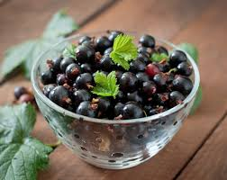

主要产地与香气差异：
共通香气特征：
使用场景：
黑加仑（Blackcurrant）
- 原产中亚和东欧，现广泛种植于法国、英国、波兰、俄罗斯等地。
- 法国勃艮第地区出产的黑加仑以香气浓郁、果香与青绿气息平衡著称。
- 不同产地的黑加仑香气差异主要体现在果香的甜度、酸度和青绿气息的强弱。
果香浓郁，带有明显的酸甜感和多汁感。独特的青绿、微带动物气息，是高级香水中常用的"黑加仑芽"香调。带有淡淡的青草、树叶和微微的辛辣感。
常用于果香调、花果香调、绿意调香水，赋予作品清新、活泼、自然的气息。适合春夏季节的日常香氛、运动香氛、年轻活力型香水。也常作为前调或中调，与玫瑰、牡丹、铃兰、柑橘等搭配，增强层次感。